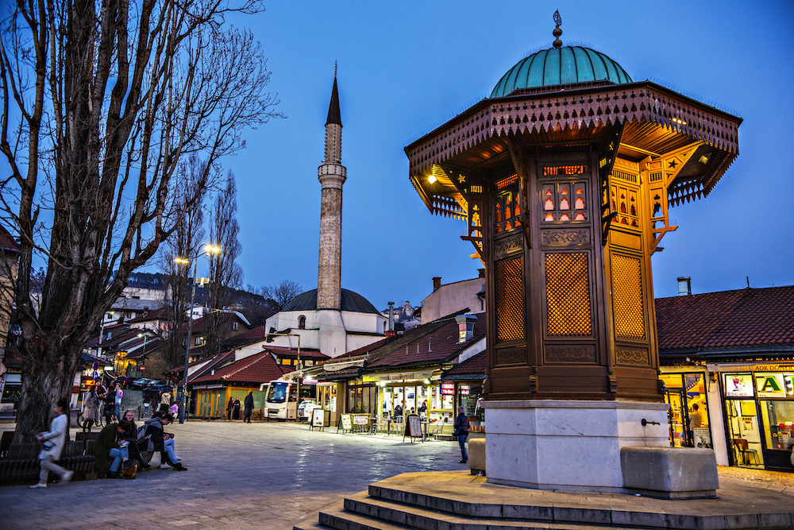
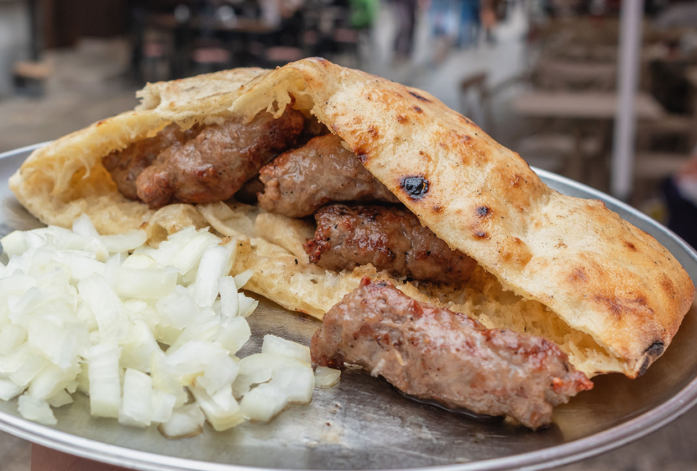
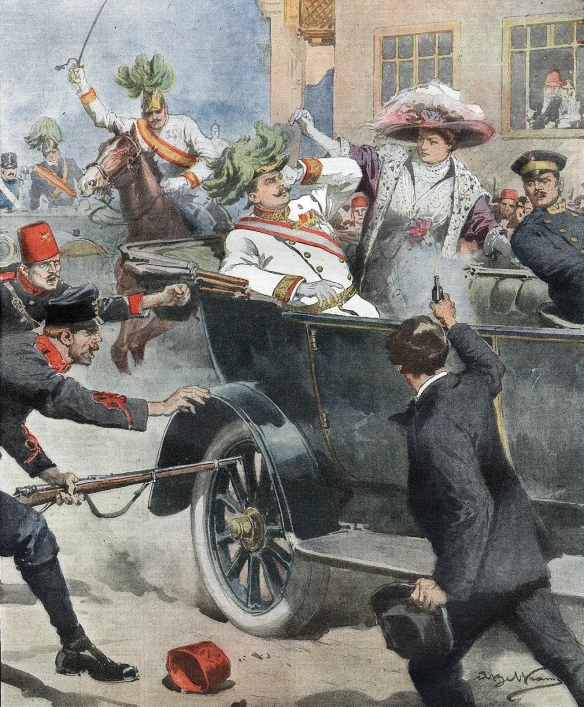

Must see location
First place you have to see is Baščaršija. It's a part of old town which is made by Otoman empire in 1946.

Where to eat in Sarajevo
If you want to try traditional food almost every restaurant have it on meni. Most popular food is ćevapi. Ćevapi is made of meat and bread crumb with another spices.

History
Sarajevo it's place where 1st world war started. Now when you visit Sarajevo you can go to place in old town where the Sarajevo atentat is made.